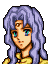

Narration
数々の障害をのりこえ、マンスターへ
たどり着いたリーフたち
彼らの前に立ちふさがるかのように
マンスターの城が高くそびえ立つ
一度は逃げ出したその『魔王の城』へ
再び足をふみいれるリーフたち
失われたものを取り戻すために・・・
新たな時代を切りひらくために・・・
Opening 1

レイドリックよ
聞けば城にまで反乱者どもの
侵入を許したそうじゃな

はっ・・・
しかし、今しばらくお時間をいただければ
やつらを必ずこの城から・・・
できもせぬことを口にするな
反乱者どもが圧倒的に優勢なのは
誰が見ても明らかではないか・・・
・・・・・・
もう少し役に立つと思っておったが
こんなものか・・・
貴公との付き合いもこれまでじゃな
待ってください、ベルド司教
あなたに見捨てられたらわれらは・・・
ならばなんとかするのじゃな
せめてものたむけじゃ
ベルクローゼンの一隊を貸してやろう
Opening 2
If you did not defeat or release Galzus in Chapters 5–6 (capture alone does not count)
If you recruited Ced in Chapter 23

王子、油断をするなよ
レイドリックの兵はもうほとんどいないが
王宮内には傭兵たちが待ち受けている
中でもガルザスという剣士は危険だ
まともに相手をしたら勝ち目はないぞ

ガルザス・・・
では・・・
どうすればよいのでしょうか？
うまくおびき寄せて
私のフォルセティでしとめるしかないが
それでも倒せるかどうかはわからない
こちらの兵が少なすぎます
アウグスト
兵を３併所に分けたのはどうしてなんだ？

一隊は子供達を取り戻すため
一隊はロプトの司祭を捕えるためです
いずれも一刻を争うゆえ
わけて突入させました
子供達の救出はわかるが
ロプトの司祭とはなんだ？
東の一角にロプトの礼拝室があり
そこには
多くの司祭がつめております
彼らは
バサークやスリープの杖を使うため
放っておいては危険なのです
なるほど・・・
だが、それではわれらだけで
レイドリックと戦えと？
さよう
他の者達が合流するよゆうはありません
リーフ王子
確かに苦しい戦いだがやむをえまい
正面の敵は私がなんとかする
きみはレイドリックを倒すことだけ
考えてくれ！
はい！
レイドリックは
ぼくが必ず倒します！
If you recruited Saias in Chapter 23

王子、油断されぬように
レイドリックの兵は
もうほとんどおりませんが
王宮内には傭兵たちが待ち受けております
特にガルザスという剣士は
相手にしてはいけません
ガルザス・・・
では・・・
どうすればよいのですか？
確実なことは申し上げられませんが
マリータという少女がいれば
なんとかなるかも知れません
ガルザスはその娘と
何か深い関わりがあるようです
マリータが・・・
アウグスト！
兵を３ヵ所に分けたのはどうしてだ？
一隊は子供達を取り戻すため
一隊はロプトの司祭を捕えるためです
いずれも一刻を争うゆえ
わけて突入させました
子供達の救出はわかるが
ロプトの司祭とはなんだ？
東の一角にロプトの礼拝室があり
そこには
多くの司祭がつめております
彼らは
バサークやスリープの杖を使うため
放っておいては危険なのです
なるほど・・・
だが、それではわれらだけで
レイドリックと戦えと？
さよう
他の者達が合流するよゆうはありません
リーフ王子
確かに苦しい戦いですが
やむをえぬこと
私もできるだけのことはします
王子はレイドリックを倒すことだけ
考えてください！
ええ！
レイドリックは
ぼくが必ず倒してみせます！
If you recruited neither in Chapter 23 (Saias captured or dead)
王子、油断をされぬように
レイドリックの兵は
もうほとんどおりませぬが
王宮内には傭兵たちが待ち受けております
中でもガルザスという剣士は
相手にしても勝ち目はありません
ガルザスか・・・
ではアウグストは
どうすればよいと言うのだ？
おびきよせて
一気にほうむるしかないでしょうな
それでも倒せるかどうかわかりませぬが・・・
こちらの兵が少なすぎる
アウグスト
兵を３併所に分けたのはどうしてなんだ？
一隊は子供達を取り戻すため
一隊はロプトの司祭を捕えるためです
いずれも一刻を争うゆえ
わけて突入させました
子供達の救出はわかるが
ロプトの司祭とはなんだ？
東の一角にロプトの礼拝室があり
そこには
多くの司祭がつめております
彼らは
バサークやスリープの杖を使うため
放っておいては危険なのです
なるほど・・・
だが、それではわれらだけで
レイドリックと戦えと？
さよう
他の者達が合流するよゆうはありません
リーフ王子、確かに苦しい戦いですが
こうなった以上、リーフ様に
がんばっていただくしかないのです！
わかっているさ
レイドリックは
ぼくが必ず倒してみせる！！
If you defeated or released Galzus in Chapters 5–6
王子、油断をされぬように
レイドリックの兵は
もうほとんどおりませぬが
王宮内には傭兵たちが待ち受けております
アウグスト
兵を３併所にわけたのはどうしてなんだ？
一隊は子供達を取り戻すため
一隊はロプトの司祭を捕えるためです
いずれも一刻を争うゆえ
わけて突入させました
子供達の救出はわかるが
ロプトの司祭とはなんだ？
東の一角にロプトの礼拝室があり
そこには
多くの司祭がつめております
彼らは
バサークやスリープの杖を使うため
放っておいては危険なのです
なるほど・・・
だが、それではわれらだけで
レイドリックと戦えと？
さよう
他の者達が合流するよゆうはありません
リーフ王子、確かに苦しい戦いですが
こうなった以上、リーフ様に
がんばっていただくしかないのです！
わかっているさ
レイドリックは
ぼくが必ず倒してみせる！！
When a child stands before the door of the room holding the Kia Staff
あれ？
変なところにきちゃったな
この扉はなんだろう？
(The door opens)
うわっ、なんかおっかなそう・・・
みんな～、待ってくれよぉ～
Talk: Mareeta → Galzus

あなたが・・・
私を救い出してくれた剣士・・・
ずっと、会いたいと思っていました

どうして戻ってきたのだ
おまえは女だ、それもまだ子供だろう
剣はおもちゃではないぞ
あのとき・・・
魔剣に魅入られた私は
夢の中で父に会いました
父とはぐれたのは
私がまだ小さいころだったけど
それでもはっきりと覚えています
父は大きくて、たくましくて
そして優しい人でした
剣士ガルザス・・・
あなたは・・・
私のお父様なのでしょう！
！・・・
どうして何も言ってくれないの！
お願いです！
そうだと言ってください！！
俺を・・・
うらんでいないのか・・・
うらむだなんて・・・
奴隷商人に捕まったのは
私がお父様の言いつけを
守らなかったからでしょう
それに、あのあとすぐに
エーヴェル様に
助けていただきました
私はいちどだって
お父様をうらんだことはありません！
すまなかった
ずっと探し続けたが
見つけられなかった・・・
それに
今の俺は人の血で汚れきっている
もう関わらぬほうがよいと思ったのだ
そんな！・・・
たとえどんなことがあろうと
私はお父様の娘です・・・
・・・・・・
おまえを助け育ててくれたのは
あの石にされてしまった女剣士か
はい・・・
・・・・・・
では捨ててはおけぬな
俺もイザーク人のはしくれとして
受けた恩はかならず返す！
After seizing
きびしい戦いでしたが
王宮はあらかた制圧できたようです
王子の戦いぶりもおみごとでした
だがアウグスト
レイドリックは本当に倒せたのか？
とどめをさしたはずだが
彼の姿はまぼろしのように消えたぞ
この城は何か
邪悪な力でおおわれているようです
マンスター城の地下にはロプト教団の
秘密神殿が設けられておるゆえ
そのせいかもしれません
それをつぶさぬ限り
真に解放がなったとはいえませぬな
秘密神殿・・・
トラキアにおける
ロプトの本拠地だな
はい
その責任者がマンフロイの腹心である
ベルド司教です
ベルド司教・・・
どんな男なんだ？
彼はトラキア教区の責任者として
すべてを取り仕切っていました
子供狩りをおしすすめたのも
ベルクローゼンに村を焼かせたのも
すべて彼の仕業です
レイドリックなどは
ただの使い走りにすぎません
捕虜の話では
エーヴェルどのを石にしたのも
ベルドだということでした
なっ、なんだと！
許さない！・・・
そのベルドという男！・・・
If Sara is dead or captured, or you do not have the Kia Staff
アウグスト！
神殿の場所はわかっているのか
はい
すでにつきとめております
ただ、ベルド司教が多数の魔道兵と
ともにこもっておりますので
攻め落とすのはたやすくありません
セリス公子の軍が来られるまで
待つという手もありますが、その場合は
ベルドを逃がす恐れもあります
やつがトラキアにもたらした悲劇は
レイドリックの比ではない
ベルドは逃がすわけにはいかない！
そうだろ
アウグスト！！
If Sara is alive and you have the Kia Staff
だが・・・
今はエーヴェルの救出が先だ
アウグスト、どうすればいいんだ！
キアの杖は入手できましたが
前にも申し上げたように
この杖を使えるものは
マンフロイの一族だけです
残念ですが、今のわれらには
どうすることもできません・・・
やはりだめなのか！
エーヴェルは救えないのか！！
ああっ・・・
ぼくはいったい何のために！・・・

そんなことないよ
あたしならその杖使えるよ
サラ！？・・・
きみが？・・・
ほんとうなのか！！
うん、使えるよ
だってわかるもの
その封印・・・おじいさまのだから
おじいさまって？・・・
まさか・・・
サラはマンフロイの孫なのか！？
おじいさまの話はしたくないの
あのひと、きらいだから
いいじゃない、そんなこと
ほらっ
行きましょうよ、リーフさま
キアの杖を忘れないでねっ
Raydrik: battle quote
ふんっ
このワシを倒しに来ただと！？
バカめ！
死ぬのはきさまたちの方だ！！
Raydrik: defeat quote
ううっ・・・
バカな・・・
なぜこんなことに・・・
ベルド司教・・・
たのむ・・・
ワシはまだ死にたくない・・・
・・・たすけて・・・くれ・・・
グワッ・・・
Raydrik: release quote
(Cannot be captured)
Galzus: battle quote
哀れだな
自分の運命を呪え・・・
Galzus: defeat quote
くっ・・・
マリータ・・・
俺は・・・
Galzus: release quote
フッ・・・
俺もおちたものだ
敵に情けをかけられるとはな・・・